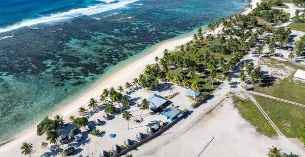

Falealupo Tai Beach
During the peaceful evening you can watch the sun set into the ocean. This is one of the most gorgeous beaches I have ever been to in Samoa. Although the journey there is rough due to bad roads the sight in the end is definitely worth it and breathtaking.
